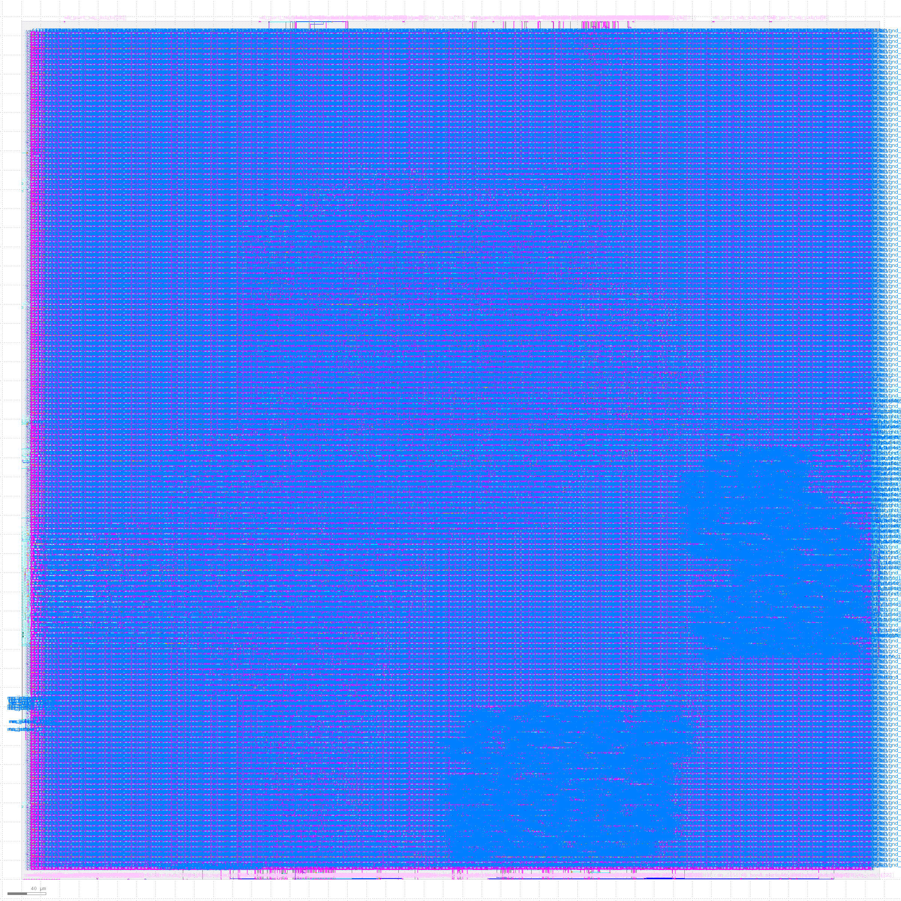

ECEN 404 · Texas A&M University, Dwight Look College of Engineering
A DDR3 memory controller, built by agents, from a sentence to a signed-off layout.
Describe the controller you need in plain English. The tool asks follow-up questions until it has a complete microarchitecture specification, then carries that design — unattended — through RTL generation, validation, and physical design to a DRC-clean, LVS-matched GDSII layout. One command, self-verified at every stage.
Built with Python, Claude, LangGraph, SystemVerilog, Cadence Xcelium, OpenROAD, sky130

How it works
Seven stages, one command
python3 flow.py opens an interactive session: choose a primary
goal (performance, power, cost, or balanced), describe anything specific in
plain English, answer any clarifying questions, and accept the proposed
specification. Everything after that runs on its own, in this order:
-
Requirements
A short interactive session in plain English, with goal-driven recommendations and follow-up questions to resolve anything ambiguous.
-
Microarchitecture Spec
Your requirements resolve to a complete, JEDEC-consistent specification — register map, timing model, controller architecture — checked for internal consistency before anything downstream sees it.
-
Spec Review
The Validation subsystem reviews the proposed spec before a single line of RTL is written.
-
RTL Generation
A phased pipeline generates all 11 controller modules as synthesizable SystemVerilog, deterministically, from the accepted spec.
-
RTL Validation
Reference models and real Cadence Xcelium simulation on TAMU Olympus check every module and the full chip against JEDEC DDR3 timing rules.
-
Physical Design
RTL to signed-off GDSII on OpenROAD-flow-scripts (sky130hd): synthesis, place & route, DRC, LVS, a pin audit, static timing.
-
Final Netlist Validation
The physical-design output is validated one more time before the run is called complete.
The tool verifies its own output at every stage. When a check fails, it attempts a bounded number of automatic corrections — findings route straight back to the specific generator responsible. If it can't resolve automatically, the run halts and records exactly where, so you can fix it and resume rather than start over.
Architecture
Three subsystems
Frontend, Validation, and Backend each own a stage of the flow and hand off through a shared specification and a structured findings format — not ad hoc files or Slack messages.
Spec → synthesizable SystemVerilog
Generates all 11 controller modules across a phased pipeline. The original version used an LLM for 4 of those modules — but each of those prompts already contained a complete "hard naming contract" (every port, parameter, and often whole code blocks, computed in Python and marked "copy verbatim"). There was no real design decision left for the model to make. The current pipeline converts every module to a deterministic generator instead: the same spec produces byte-identical RTL every time.
Read the rationale →Reference models & real simulation
Builds deterministic test vectors and reference models from the spec, reviews every microarchitecture before generation starts, and runs real Cadence Xcelium simulation against every generated module and the full chip. Findings are routed back to Frontend through a structured handoff contract, not a free-text report.
Read the handoff contract →Synthesis through sign-off
Takes the RTL bundle from Frontend and runs it through OpenROAD-flow-scripts (sky130hd): synthesis, place & route, DRC, LVS, a pin audit, and static timing. A check that can't run halts the pipeline instead of silently reporting a pass.
Read the backend README →Results
Full-chip signoff
Every generated block, and the integrated full chip, passes DRC, LVS, a complete pin audit, and static timing on the open-source sky130 PDK.
- Die area
- 0.90 × 0.90 mm
- Cells placed
- 23,587
- Fmax
- 120.5 MHz, worst slack +0.89 ns
- Power
- 50.7 mW
- ✓ 11/11 blocks — 0 DRC violations, LVS match, full pin audit, STA pass
- ✓ Full-chip integration — 0 routing violations, 13,528 nets / 556 pins, LVS match
- ✓ 601/601 pins accounted for
Known limitation: the integration build above is a scaffold —
it wires the connections Frontend has declared so far and promotes the rest
to chip pins, so it builds and signs off as a real chip, but two modules
(calibration, data_path) don't yet drive signals
internally. It's tracked for completion as Frontend backfills the remaining
connectivity.
As of the latest recorded full-chip signoff, 2026-09-17.
Team
Who built it
- Lehana Ramkumar — Frontend RTL generation pipeline — spec synthesis through SystemVerilog.
- Dawson Carpenter — Backend RTL to GDSII — synthesis, place & route, sign-off.
- Jacob Zatopek — Validation Reference models, simulation, and cross-subsystem findings.
TA: Fahrettin Ay · Sponsor: Stavros Kalafatis
Get started
Run it yourself
Needs Python 3.10+, an Anthropic API key, Docker, and OpenROAD-flow-scripts. TAMU Olympus access is required for RTL lint/simulation. Full setup in the guide.